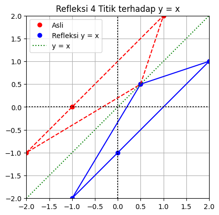
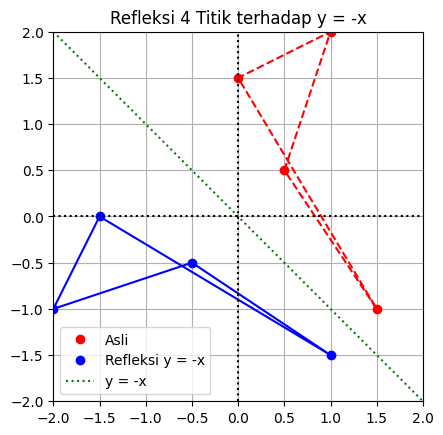
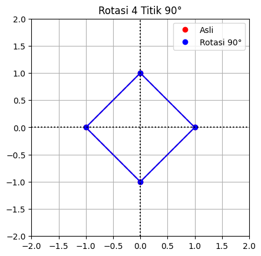
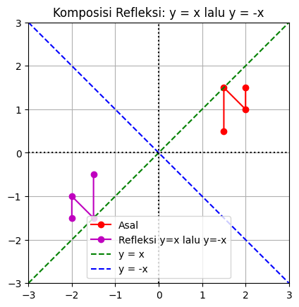
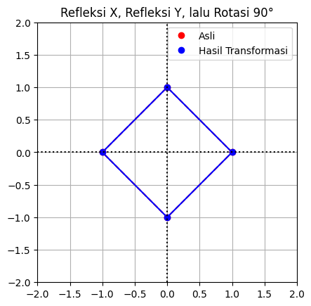

y = x
import numpy as np
import matplotlib.pyplot as plt
# Titik-titik asal (4 titik)
x = np.array([0.5, 1, -1, -2])
y = np.array([0.5, 2, 0, -1])
koordinats = np.vstack([x, y]) # 2x4
# Matriks refleksi terhadap y = x
R = np.array([[0, 1],
[1, 0]])
# Hasil refleksi
R_koordinats = R @ koordinats
x_LT3 = R_koordinats[0, :]
y_LT3 = R_koordinats[1, :]
# Membuat gambar
fig, ax = plt.subplots()
# Plot titik-titik asal (merah)
ax.plot(x, y, 'ro', label='Asli')
# Plot titik hasil refleksi (biru)
ax.plot(x_LT3, y_LT3, 'bo', label='Refleksi y = x')
# Hubungkan titik-titik asal dengan garis putus-putus
ax.plot(np.append(x, x[0]), np.append(y, y[0]), 'r--')
# Hubungkan titik-titik hasil refleksi dengan garis biasa
ax.plot(np.append(x_LT3, x_LT3[0]), np.append(y_LT3, y_LT3[0]), 'b')
# Gambar garis y = x sebagai referensi
xx = np.linspace(-2, 2, 100)
ax.plot(xx, xx, 'g:', label='y = x')
# Gambar sumbu koordinat
ax.axvline(x=0, color="k", ls=":")
ax.axhline(y=0, color="k", ls=":")
ax.grid(True)
ax.axis([-2, 2, -2, 2])
ax.set_aspect('equal')
ax.set_title("Refleksi 4 Titik terhadap y = x")
ax.legend()
plt.show()

y =-x
import numpy as np
import matplotlib.pyplot as plt
# Titik-titik asal (4 titik)
x = np.array([0.5, 1, 0,1.5])
y = np.array([0.5, 2, 1.5, -1])
koordinats = np.vstack([x, y]) # 2x4
# Matriks refleksi terhadap y = -x
R = np.array([[0, -1],
[-1, 0]])
# Hasil refleksi
R_koordinats = R @ koordinats
x_LT3 = R_koordinats[0, :]
y_LT3 = R_koordinats[1, :]
# Membuat gambar
fig, ax = plt.subplots()
# Plot titik-titik asal (merah)
ax.plot(x, y, 'ro', label='Asli')
# Plot titik hasil refleksi (biru)
ax.plot(x_LT3, y_LT3, 'bo', label='Refleksi y = -x')
# Hubungkan titik-titik asal dengan garis putus-putus
ax.plot(np.append(x, x[0]), np.append(y, y[0]), 'r--')
# Hubungkan titik-titik hasil refleksi dengan garis biasa
ax.plot(np.append(x_LT3, x_LT3[0]), np.append(y_LT3, y_LT3[0]), 'b')
# Gambar garis y = -x sebagai referensi
xx = np.linspace(-2, 2, 100)
ax.plot(xx, -xx, 'g:', label='y = -x')
# Gambar sumbu koordinat
ax.axvline(x=0, color="k", ls=":")
ax.axhline(y=0, color="k", ls=":")
ax.grid(True)
ax.axis([-2, 2, -2, 2])
ax.set_aspect('equal')
ax.set_title("Refleksi 4 Titik terhadap y = -x")
ax.legend()
plt.show()

rotasi 90 derajat
import numpy as np
import matplotlib.pyplot as plt
# Titik-titik asal (4 titik)
x = np.array([1, 0, -1, 0])
y = np.array([0, 1, 0, -1])
koordinats = np.vstack([x, y]) # 2x4
# Sudut rotasi (dalam radian)
theta = np.pi / 2 # 90 derajat
# Matriks rotasi
R = np.array([[np.cos(theta), -np.sin(theta)],
[np.sin(theta), np.cos(theta)]])
# Hasil rotasi
R_koordinats = R @ koordinats
x_LT3 = R_koordinats[0, :]
y_LT3 = R_koordinats[1, :]
# Membuat gambar
fig, ax = plt.subplots()
# Plot titik-titik asal (merah)
ax.plot(x, y, 'ro', label='Asli')
# Plot titik hasil rotasi (biru)
ax.plot(x_LT3, y_LT3, 'bo', label='Rotasi 90°')
# Hubungkan titik-titik asal dengan garis putus-putus
ax.plot(np.append(x, x[0]), np.append(y, y[0]), 'r--')
# Hubungkan titik-titik hasil rotasi dengan garis biasa
ax.plot(np.append(x_LT3, x_LT3[0]), np.append(y_LT3, y_LT3[0]), 'b')
# Gambar sumbu koordinat
ax.axvline(x=0, color="k", ls=":")
ax.axhline(y=0, color="k", ls=":")
ax.grid(True)
ax.axis([-2, 2, -2, 2])
ax.set_aspect('equal')
ax.set_title("Rotasi 4 Titik 90°")
ax.legend()
plt.show()

gabungan
import numpy as np
import matplotlib.pyplot as plt
points = np.array([
[2, 1.5],
[2, 1],
[1.5, 1.5],
[1.5, 0.5]
]).T
ref_y_eq_x = np.array([[0, 1], [1, 0]])
ref_y_eq_negx = np.array([[0, -1], [-1, 0]])
hasil = ref_y_eq_negx @ ref_y_eq_x
composed = hasil @ points
fig, ax = plt.subplots()
ax.plot(points[0], points[1], 'ro-', label='Asal')
ax.plot(composed[0], composed[1], 'mo-', label='Refleksi y=x lalu y=-x')
x_vals = np.linspace(-3, 3, 100)
ax.plot(x_vals, x_vals, 'g--', label='y = x')
ax.plot(x_vals, -x_vals, 'b--', label='y = -x')
# Format sumbu dan tampilan
ax.axhline(0, color='k', linestyle=':')
ax.axvline(0, color='k', linestyle=':')
ax.set_aspect('equal')
ax.set_xlim(-3, 3)
ax.set_ylim(-3, 3)
ax.grid(True)
ax.set_title('Komposisi Refleksi: y = x lalu y = -x')
ax.legend()
plt.show()

import numpy as np
import matplotlib.pyplot as plt
# Titik-titik asal (4 titik)
x = np.array([1, 0, -1, 0])
y = np.array([0, 1, 0, -1])
koordinats = np.vstack([x, y]) # 2x4
# Matriks refleksi sumbu X
Rx = np.array([[1, 0],
[0, -1]])
# Matriks refleksi sumbu Y
Ry = np.array([[-1, 0],
[ 0, 1]])
# Matriks rotasi 90°
theta = np.pi / 2
R90 = np.array([[np.cos(theta), -np.sin(theta)],
[np.sin(theta), np.cos(theta)]])
# Kombinasi transformasi: T = R90 * Ry * Rx
T = R90 @ Ry @ Rx
# Hasil transformasi
T_koordinats = T @ koordinats
x_T = T_koordinats[0, :]
y_T = T_koordinats[1, :]
# Membuat gambar
fig, ax = plt.subplots()
# Plot titik-titik asal (merah)
ax.plot(x, y, 'ro', label='Asli')
# Plot titik hasil transformasi (biru)
ax.plot(x_T, y_T, 'bo', label='Hasil Transformasi')
# Hubungkan titik-titik asal dengan garis putus-putus
ax.plot(np.append(x, x[0]), np.append(y, y[0]), 'r--')
# Hubungkan titik-titik hasil transformasi dengan garis biasa
ax.plot(np.append(x_T, x_T[0]), np.append(y_T, y_T[0]), 'b')
# Gambar sumbu koordinat
ax.axvline(x=0, color="k", ls=":")
ax.axhline(y=0, color="k", ls=":")
ax.grid(True)
ax.axis([-2, 2, -2, 2])
ax.set_aspect('equal')
ax.set_title("Refleksi X, Refleksi Y, lalu Rotasi 90°")
ax.legend()
plt.show()
